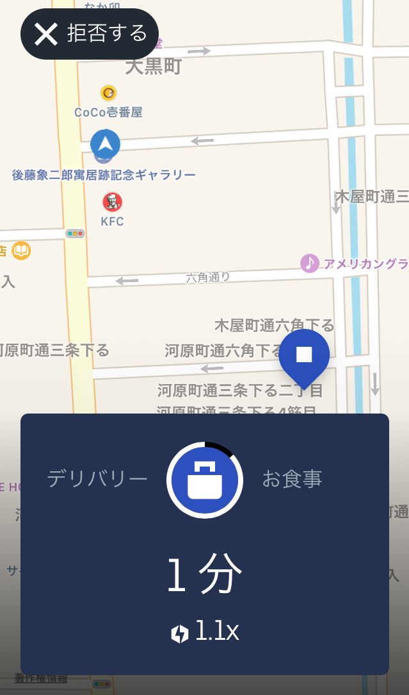

UberEats(ウーバーイーツ)
全国どこでも、いつでもライフスタイルに合わせて働こう
UberEatsの魅力
自由に働けるスタイル
アプリを起動し、オンラインボタンを押すだけで出勤状態になるため、予定、出費に合わせて自由に働けるスタイル！もちろんシフトを提出する事なんてありません！これが始めた1番の理由かも。笑 直近のイベントに対してお金を作る事ができるのがメリットですね。登録さえしておけばいつでも出勤状態になれるので、短期バイト感覚でも大丈夫ですし、本業がある方達も隙間時間で稼ぐ事ができます。今までこんな自由な仕事ってなかったのではないでしょうか！? 気まぐれさん！自由人バンザーイ☆*:.｡. o(≧▽≦)o .｡.:*☆
給料がすぐに支給
ウーバーイーツは外国送金で週払いなので、会社勤めあるあるの、給料日までが遠いあのもどかしさがないのがいいです！
↑の画像のように、売上の詳細画面も充実してるので、自身の配達回数、1回の配達金額などもしっかり確認できます。よく、時給的にどうなんだろう？と疑問の声がありますが、体感的には1200〜1300円くらいはある感覚です。オンライン時間で計算するというより、オンライン中の実際走行している実働時間で計算するとそのくらいかな？って感じです。
職場の人間関係がない
アルバイトにしろ、会社員にしろ、職場の人間関係って色々ありますよね。泣 ウーバーイーツはアプリを通じてレストランとお客様の架け橋になるという所で、そこのストレスがありません！コミュニケーションが苦手な方、1人が好きなマイペースさんでも楽しく仕事ができます！
運動になる
普段見ない景色やお店をたくさん見れるのに加え、現代人に足りてない有酸素運動もしっかりフォローしてくれます！サイクリング感覚で運動もできて、お金がもらえるなんて、最高じゃないですよね！！ ちなみに私も、冬場で蓄えたお腹周りのぜい肉が、5キロも落ちました。個人差はあると思いますが。笑 最近気候的にもやりやすいので、配達終わりの帰り道とかめちゃくちゃ気持ちいいんですよねー。 よく足に筋肉がついちゃうのでは？とか聞かれるんですが、ギアをガチガチに重くした状態で坂道ばかり一日中こがない限りは太くなる事はそうそうないです！ギアは軽めにして、足に負荷をかけずにこげば、むしろ引き締まって美脚になると言われてます！僕もデニムサイズは絶対変えたくないですが、始めてから1か月、いい締まりを実感してます。
Uber Eats配達のやり方
①出発～待機する
まずはUberドライバーのアプリを開き、「出発」ボタンを押しオンラインにします。

オンラインにしたら配達リクエストがくる状態なので、配達リクエストが来るまで待機します。 待機の場所はどこでもかまいませんが、始めたばかりのころはお店の近くだったり、お店がたくさん集まってる場所だと鳴りやすいと思います。 鳴りやすい待機場所を見つけるのもなかなかおもしろいですよ。 他の配達パートナーさんの待機場所を参考にしたりしてみてください。
ランチタイム・・・11時〜14時
ディナータイム・・18時〜21時
②配達リクエストを受ける
待機していると配達リクエストが鳴ります。 下記画面のようになり、通知音で知らせてくれます。

緑のピンが付いている場所がお店の場所になります。 画面の上の黒いところにはお店の名前と住所が書かれますが、今はプライバシー上消しています。 お店の場所を確認したら、お店の場所まで向かいます。 基本的にUber Eatsのマップでいけると思いますが、もし、わからなければGoogleマップで見ると細かく位置がわかるのでオススメです。 Googleマップは『画面の左下にあるコンパスの下にある記号マーク』をタップすると画面が切り替わります。 それでもわからない場合は僕はGoogleで検索して、お店の外観や住所を確認したりすれば見つけることができます。 一応、お店に電話することもできますが、まあ大丈夫です。 あとお店によっては『レストランからの注意事項』という欄に注意事項が書いてある場合があります。 「裏口からはいってきてほしい。」や「配達バックはお店に入れないでほしい。」などありますので、お店に着く前に確認しておきましょう。
ダブルピックアップについて
配達に慣れてくると、同じお店から2つのリクエストが来ることがあります。 これはダブルピックアップといって、1つのお店から2人のお客さんに配達することです。 お店で2件分の料理を預かる→1人目のお客さんに届ける→2人目のお客さんに届けて終了。 こういう流れになります。 件数はもちろん2件分になり、通常の2件行くより配達時間がはやく終わるので、クエストがある時には便利です。
③お店で商品を受け取る
お店に着いたら、邪魔にならないところに自転車またはバイクを置きます。 お店にはいり、店員さんに「Uber Eats(ウーバーイーツ)です！」と伝えれば、対応してくださります。 この時、配達バックですが、僕は基本的に持ってお店にはいりますが、狭い店内のお店は配達バックは邪魔になるので、自転車と一緒に外に置いておいたりします。 店員さんから注文番号を聞かれるので、注文番号を答えて、商品を受け取ります。 注文番号は下記画面だと『52900』のことです。 毎回、注文によって番号が違うので、確認してください。
配達バックに商品をいれて、上の画面のお客さんの名前の横にある□をタップしてチェックがいれ、「配達する」をスライドします。 （この上の画面では黒くなっているとこがお客さんの名前が書かれているところです。）
④お客さんのところに向かう
「配達を開始する」をスライドすると、届けるお客さんの位置がピン表示されます。 Googleマップにすると、位置情報だけでなく、経路もでるので、土地勘があまりない場所だとこちらで見るとわかりやすいと思います。 もし住所付近に行ってもお客さんの場所がわからない場合は電話で聞きます。 マンション名が書かれていない場合や表札がない家は電話してお客さんに確認とった方が確実です。 電話して嫌がる人は全然いないので、調べてもどうしてもわからない時はお客さんに聞きましょう。 ちなみに届ける場所はホントにいろんなところがあります。 マンション、一軒家、お店、ビル内の会社、外、高校、大学、風俗店などなど。 最初は「ここどこ？」みたいなところがあるかもしれませんが、慣れてきたら臨機応変に対応できるようになってきます。
⑤お客様に商品を渡す
「配達を開始する」をスライドすると、届けるお客さんの位置がピン表示されます。 Googleマップにすると、位置情報だけでなく、経路もでるので、土地勘があまりない場所だとこちらで見るとわかりやすいと思います。 もし住所付近に行ってもお客さんの場所がわからない場合は電話で聞きます。 マンション名が書かれていない場合や表札がない家は電話してお客さんに確認とった方が確実です。 電話して嫌がる人は全然いないので、調べてもどうしてもわからない時はお客さんに聞きましょう。 ちなみに届ける場所はホントにいろんなところがあります。 マンション、一軒家、お店、ビル内の会社、外、高校、大学、風俗店などなど。 最初は「ここどこ？」みたいなところがあるかもしれませんが、慣れてきたら臨機応変に対応できるようになってきます。
困ったらサポートセンターへ

困った事やどう対応していいかわからないことはサポートセンターに連絡するのが一番です。 各地域のサポートセンターの連絡先をまとめておきますので、自分の地域のサポートセンターの連絡先はメモっておくといいでしょう。
| 東京都 | 0800-080-4114 |
|---|---|
| 神奈川県 | 0800-080-4255 |
| 埼玉県 | 0800-080-4114 |
| 千葉県 | 0800-080-4114 |
| 愛知県 | 0800-123-6931 |
| 大阪府 | 0800-080-4270 |
| 京都府 | 0800-170-0024 |
| 兵庫県 | 0800-080-4288 |
| 福岡県 | 0800-080-4153 |
是非 UberEatsを楽しもう